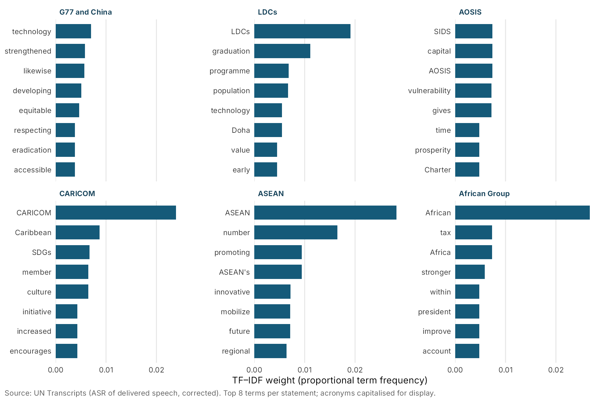
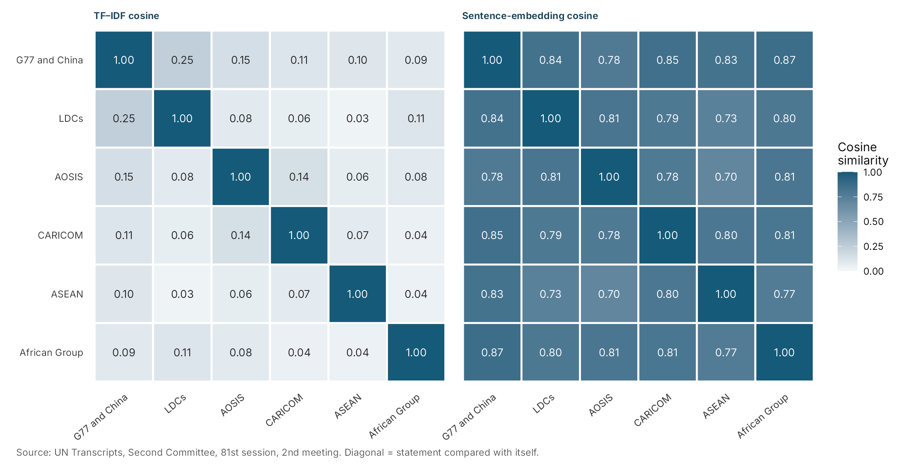
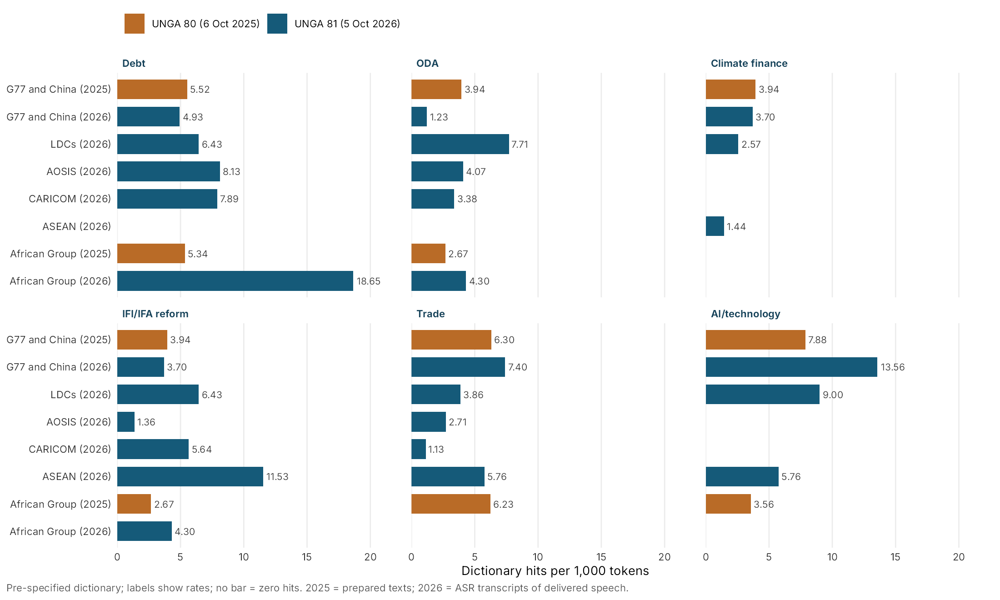
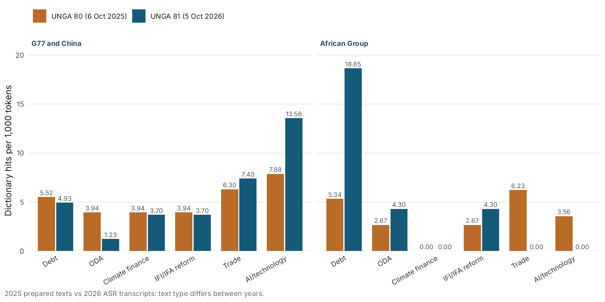

Global South in international organizations
Who speaks for the South in the UN Second Committee? The G77 and its subgroups at the opening of UNGA 81
On 5 October 2026 the Second Committee (Economic and Financial) of the UN General Assembly opened its general debate on “Financing sustainable development in a changing global economy to accelerate the implementation of the Sustainable Development Goals.” Before any individual developing country spoke, six Southern groups took the floor: the Group of 77 and China, ASEAN, the Alliance of Small Island States (AOSIS), the Caribbean Community (CARICOM), the Least Developed Countries (LDCs) and the African Group. A text analysis of their statements shows that every subgroup statement is closer to the G77 statement than to the average of the other subgroups, while each group’s most distinctive words point to its own agenda: graduation for the LDCs, vulnerability for the small island states, credit ratings and tax for the African Group. The corpus is small and the findings are descriptive.
Similarity measures closeness of wording (TF–IDF) or of meaning as approximated by sentence embeddings. It does not show coordination, influence or agreement. Theme rates are dictionary hits per 1,000 tokens; the underlying counts are small (0 to 13 hits per statement and theme). The 2026 texts are automatic speech-recognition (ASR) transcripts of delivered speeches, not official records. The 2025 texts are prepared statements.
1. The development: one bloc, many voices
In the Second Committee the G77 negotiates development resolutions as one bloc. Yet at the Committee’s 2nd meeting of the 81st session, chaired by Suela Janina (Albania), the floor passed through a series of group statements before national statements began. According to the UN Transcripts record, the order was: Uruguay for the Group of 77 and China; the Philippines for ASEAN; Turkmenistan for the Group of Friends of Sustainable Transport; Palau for AOSIS; Australia for Canada, Australia and New Zealand; the European Union; Jamaica for CARICOM; the Gambia for the LDCs; Costa Rica for the Group of Friends of Human Security; and Namibia for the African Group. Statements on behalf of groups were limited to seven minutes. The UN’s meetings coverage (GA/EF/3619) confirms these attributions.
In the transcribed speeches, CARICOM aligned itself with the statements of both the G77 and AOSIS, and the LDCs aligned themselves with the G77 statement. The transcripts of the ASEAN, AOSIS and African Group statements contain no such sentence. If the umbrella group speaks for all its members, why do subgroups spend scarce floor time? Two readings are possible. In a division of labour, the G77 sets the common frame and subgroups add specific demands. In voice competition, subgroups put forward priorities that the umbrella statement dilutes or omits.
- How far do the statements of overlapping Southern subgroups repeat, specialise or depart from the G77 message?
- Do subgroups emphasise the issues on which they have the largest stake?
- Did the pattern change between UNGA 80 (6 October 2025, Iraq chairing the G77) and UNGA 81 (5 October 2026, Uruguay chairing)?
These questions follow two recent strands of research. Draguljić and Anspach (2025) find in General Assembly roll-call votes that G77 solidarity remains intact even as members’ incomes diverge, but their interviews with G77 diplomats suggest that vote-based measures overstate solidarity because many resolutions are never put to a vote. Hirschmann, Heupel and Kröker (2026) move the analytical lens from votes to discourse, using a dictionary of deliberative cues across 27,812 Security Council speeches. This note applies a speech-based view to a different setting: group statements in a General Assembly Main Committee. (Both summaries are based on the published abstracts.)
2. Data and methods
The corpus contains eight statements. Six come from the 2026 meeting and are segmented from the UN Transcripts ASR record. Speaker attributions were cross-checked against GA/EF/3619. For 2025, only two full texts could be found: the G77 statement delivered by Iraq, published on g77.org, and the African Group statement delivered by Guinea-Bissau, published by the African Union Permanent Observer Mission. UN Transcripts reports no transcript for the 2025 opening meetings, and no UN press summary of that opening was found. The Landlocked Developing Countries and the Arab Group were not found speaking as groups in the examined records of either session. They are recorded as “not found”, not as “did not speak”.
| Group | Speaker | Session (date) | Tokens | Text type |
|---|---|---|---|---|
| Group of 77 and China | Uruguay | UNGA 81 (5 Oct 2026) | 811 | ASR of delivered speech |
| ASEAN | Philippines | UNGA 81 (5 Oct 2026) | 694 | ASR of delivered speech |
| AOSIS | Palau | UNGA 81 (5 Oct 2026) | 738 | ASR of delivered speech |
| CARICOM | Jamaica | UNGA 81 (5 Oct 2026) | 887 | ASR of delivered speech |
| Least Developed Countries | Gambia | UNGA 81 (5 Oct 2026) | 778 | ASR of delivered speech |
| African Group | Namibia | UNGA 81 (5 Oct 2026) | 697 | ASR of delivered speech |
| Group of 77 and China | Iraq | UNGA 80 (6 Oct 2025) | 1,269 | Prepared text |
| African Group | Guinea-Bissau | UNGA 80 (6 Oct 2025) | 1,124 | Prepared text |
Obvious ASR errors were corrected through a versioned table of ten rules (for example, “Cevier” to “Sevilla” and “SEEDS” to “SIDS”), and every replacement was logged. Raw files are checksum-verified and never edited. Stop words and diplomatic courtesies (“Madam Chair”, “excellencies”, “on behalf of”) were removed before weighting terms.
Four simple methods were used. (1) TF–IDF distinctive terms show what each statement adds beyond the shared development vocabulary; for 2026 they are computed within the six statements of the same meeting, and a term must occur at least twice. (2) Cosine similarity is computed on TF–IDF vectors and, as a robustness check, on sentence embeddings (all-MiniLM-L6-v2, averaged over sentences), because word overlap misses paraphrase. (3) A six-theme dictionary (debt, official development assistance, climate finance, reform of international financial institutions and architecture, trade, and AI and technology) was fixed before the analysis and checked with keyword-in-context reading. (4) Year-on-year comparisons are possible only for the G77 and the African Group. With eight documents, topic models and significance tests would not be justified, and none are reported.
3. Findings
3.1 What each group adds: distinctive vocabulary
The G77 statement’s most distinctive terms are general: “technology”, “strengthened”, “likewise”, “developing” and “equitable”. As the umbrella text, it speaks the language of shared principle. The subgroup statements are distinguished first by their own names and then by niche agendas. The LDCs’ list continues with “graduation”, “programme”, “population” and “Doha”, referring to the Doha Programme of Action. AOSIS has “SIDS”, “capital” and “vulnerability”. CARICOM has “Caribbean”, “culture” and “swaps” (debt-for-climate and debt-for-nature swaps). The African Group has “tax”, “credit” and “rating”, reflecting its calls for transparent credit-rating methods and international tax cooperation. ASEAN has “promoting”, “innovative”, “mobilize”, “regional” and “strategic”. Its high score on “number” is an artefact of delivery: the Philippine ambassador read out a numbered list of ten priorities.

3.2 Hub and spokes? Similarity to the G77
All five subgroup statements are closer to the G77 statement than to the average of the other four subgroups, on both measures. The LDCs show the strongest lexical tie (TF–IDF cosine 0.247 with the G77, against 0.070 with the other subgroups). By sentence embeddings, the African Group is closest to the G77 (0.867).
| Subgroup | TF–IDF: with G77 | TF–IDF: mean with other subgroups | Embedding: with G77 | Embedding: mean with other subgroups |
|---|---|---|---|---|
| LDCs | 0.247 | 0.070 | 0.838 | 0.783 |
| AOSIS | 0.152 | 0.094 | 0.780 | 0.776 |
| CARICOM | 0.114 | 0.081 | 0.849 | 0.796 |
| ASEAN | 0.104 | 0.052 | 0.831 | 0.751 |
| African Group | 0.088 | 0.070 | 0.867 | 0.797 |
The two measures do not rank the subgroups in the same way (Spearman correlation of −0.5 across the five subgroups). AOSIS is the second closest to the G77 in wording (0.152) but the most distant by embeddings (0.780, barely above its 0.776 average with the other subgroups). The G77 is also not always each subgroup’s single nearest neighbour. It is the most similar statement for three of the five subgroups by TF–IDF and for four of five by embeddings. CARICOM’s wording is closest to AOSIS (0.145, against 0.114 with the G77), which matches its stated alignment with both groups. The African Group’s wording is closest to the LDCs (0.110, against 0.088 with the G77). By embeddings, AOSIS is closest to the LDCs (0.812) and the African Group (0.807), with the G77 fourth of five. The most distant pairs both involve ASEAN: ASEAN–LDCs by TF–IDF (0.03) and ASEAN–AOSIS by embeddings (0.70).

Method: part of the G77’s central position is mechanical. An omnibus statement that itself names the LDCs and the Doha Programme, the LLDCs, the SIDS and the Antigua and Barbuda Agenda, and middle-income countries will share vocabulary with each specialised statement.
3.3 Specialisation by stake: six themes
Debt is most intense in the African Group statement (18.65 hits per 1,000 tokens, from 13 hits), followed by AOSIS (8.13), CARICOM (7.89), the LDCs (6.43) and the G77 (4.93). ASEAN has none. Official development assistance is most intense in the LDC statement (7.71, from 6 hits), which restated the target of 0.15 to 0.20 per cent of gross national income as ODA to LDCs; the G77’s 2026 rate is 1.23. Reform of the financial architecture is highest for ASEAN (11.53, from 8 hits), although keyword-in-context checks show that the entry “reform*” also captures ASEAN’s call for WTO reform. AI and technology is concentrated in the G77 (13.56), the LDCs (9.00) and ASEAN (5.76); the other three have none.

Climate finance is the surprise. Under the dictionary, it appears in the G77 (3.70), LDC (2.57) and ASEAN (1.44) statements and is absent from the AOSIS, CARICOM and African Group statements. This contradicts the expectation that the island groups would weigh it most heavily, but it should be read with care. The dictionary entry was the exact phrase “climate finance”, fixed before the analysis and not changed afterwards. CARICOM’s one reference to “climate financing” is therefore not counted. The island statements also frame climate exposure through the vocabulary of debt, vulnerability and access to concessional finance. CARICOM described “a climate crisis that we did not create”, called for operationalising the Multidimensional Vulnerability Index and encouraged debt-for-climate swaps. AOSIS argued that vulnerability must matter in determining access to finance. In short, the LDC–ODA and African Group–debt patterns fit the specialisation expectation; the island groups’ climate concern appears in the transcripts, but not in the climate-finance terms of the dictionary.
3.4 What changed between 2025 and 2026?
Only the G77 and the African Group can be compared across years. By embeddings, each group’s two statements are very similar (G77 0.947; African Group 0.894). Lexical similarity across years is much lower (0.210 and 0.287), as expected when a prepared text is compared with a transcript of a shorter spoken version. The similarity between the G77 and the African Group moved in opposite directions on the two measures: from 0.096 to 0.064 by TF–IDF, and from 0.858 to 0.867 by embeddings. Both changes are small, and together they show no clear change.
| Pair | TF–IDF cosine | Embedding cosine |
|---|---|---|
| G77 2025 vs G77 2026 | 0.210 | 0.947 |
| African Group 2025 vs 2026 | 0.287 | 0.894 |
| G77 vs African Group, 2025 | 0.096 | 0.858 |
| G77 vs African Group, 2026 | 0.064 | 0.867 |
The theme rates shift more visibly. In the G77 statement, AI and technology rose from 7.88 to 13.56 hits per 1,000 tokens, and ODA fell from 3.94 to 1.23. In the African Group statement, debt rose from 5.34 to 18.65, while trade (6.23) and AI and technology (3.56) fell to zero. These are changes in emphasis between single statements, based on small counts and two text types. They cannot be attributed to the change of G77 chair or to the post-Sevilla agenda.

4. Interpretation and theoretical implications
Taken together, the evidence fits a division of labour better than voice competition. Every subgroup statement is closer to the umbrella text than to the average of its peers. The subgroups’ distinctive vocabulary is specific rather than contrary: graduation and ODA targets for the LDCs, the vulnerability index for island states, credit ratings and tax cooperation for the African Group, regional integration for ASEAN. Two of the five groups stated their alignment with the G77 explicitly. Nothing in these measures shows a subgroup contradicting the G77 line, although lexical measures are not designed to detect contradiction.
The spokes are not attached only to the hub, however. The lexical ties between CARICOM and AOSIS and between the African Group and the LDCs suggest that overlapping membership creates lateral links among subgroups as well as vertical alignment with the umbrella. CARICOM members are small island developing states, and many African states are LDCs. For coalition theory, this suggests treating Southern coalitions as a nested and overlapping network rather than as a single bloc with satellites. ASEAN stands apart: it has the lowest average lexical similarity to the other subgroups (0.052) and no debt or ODA hits. All its members belong to the G77, but in this debate it spoke as a regional economic organisation with its own programme.
These findings speak to Draguljić and Anspach’s point that the way data are generated shapes what we see of Southern solidarity. Votes record the outcome. Group speeches show a shared frame and differentiated emphases at the same moment. Neither alone establishes cohesion or fragmentation. The measures used here capture similarity, not the listening and consensus-orientation that Hirschmann, Heupel and Kröker measure in the Security Council. Two observable implications could separate the readings in future work. Under a division of labour, subgroup-specific demands should appear in the texts of G77-tabled resolutions. Under voice competition, demands missing from G77 drafts should resurface in separate draft resolutions, amendments or explanations of position.
5. Limitations
- Corpus gaps. The 2025 statements of the LDCs, AOSIS, CARICOM and ASEAN are missing, so the year-on-year comparison covers only the G77 and the African Group. The LLDCs and the Arab Group were not found speaking as groups in either session.
- Prepared versus delivered texts. The 2025 texts are prepared statements; the 2026 texts are ASR transcripts of delivered speech, which are shorter and contain spoken fillers and recognition errors. Cross-year differences mix content with text type.
- Transcript completeness. The 2026 G77 transcript lacks one passage and ends mid-sentence. The LDC segment includes the opening words of the Gambia’s national statement. Some ASR variants remain uncorrected (for example, spellings of “Sevilla” in the African Group transcript). The processed 2025 African Group text omits the statement’s final closing sentences.
- Small n. Eight documents and small hit counts allow description only. TF–IDF on six to eight documents is unstable, and no significance tests are reported.
- Dictionary coverage. The pre-specified entry “climate finance” misses “climate financing”; “reform*” also captures non-financial reform; “adaptation” is not always about finance.
- Similarity is not coordination. Similar wording can come from a shared agenda, shared drafting conventions or the umbrella text’s breadth. It does not show coordination, influence or agreement.
- Embedding model. A general-purpose model gives high baseline similarity to all development speeches (0.68 to 0.95 across all pairs in this corpus), which compresses differences.
Conclusion: a common frame with specialised additions
At the opening of the 81st session, the South spoke in the Second Committee through a hub and several overlapping spokes. The G77 statement provided the broadest common frame. Each subgroup stayed closer to it than to its peers, while adding the issues on which it has the largest stake. The answer to “who speaks for the South?” is therefore not one actor. The G77 speaks for the shared frame, and the subgroups speak for the specifics. Whether those specifics shape negotiated outcomes is a question for resolution texts and votes, which this analysis has not examined.
Sources and reproducibility
Data: UN Transcripts, Second Committee, 81st session, 2nd meeting (5 October 2026), ASR text of delivered statements; UN Meetings Coverage GA/EF/3619, used to verify speakers; G77 statement by Iraq, 6 October 2025; African Group statement by Guinea-Bissau, 6 October 2025. All sources retrieved 10 October 2026. Analysis in R (quanteda 4.5.0, tidyverse) with a Python step for sentence embeddings (sentence-transformers, all-MiniLM-L6-v2). The project directory contains the raw files with SHA-256 checksums, the versioned ASR correction table and log, the R Markdown analysis and all output tables. Reproduce by applying the corrections, computing the embeddings and rendering T1_analysis.Rmd.
References
- Draguljić, Gorana, and Nicolas M. Anspach. 2025. “Southern Solidarity? A Mixed-Methods Analysis of the G77 in the United Nations General Assembly.” Global Studies Quarterly 5 (1): ksaf027. https://doi.org/10.1093/isagsq/ksaf027
- Hirschmann, Gisela, Monika Heupel, and Evgenija Kröker. 2026. “Deliberating International Politics: Listening and Consensus-Orientation in the United Nations Security Council.” The Review of International Organizations, published online 6 October 2026. https://doi.org/10.1007/s11558-026-09650-6
- United Nations. 2026. “With $4 Trillion Annual SDG Financing Gap, Second Committee Opens General Debate amid Calls to ‘Double Down’ on Development.” Meetings Coverage GA/EF/3619, 5 October. https://press.un.org/en/2026/gaef3619.doc.htm
- United Nations. 2026. “Second Committee, 2nd plenary meeting, General Assembly, 81st session.” UN Transcripts, 5 October. https://transcripts.un.org/en/ga/c2/81/2
- Group of 77. 2025. “Statement on behalf of the Group of 77 and China by the delegation of the Republic of Iraq at the 80th session of the UN General Assembly Second Committee general debate.” New York, 6 October. https://www.g77.org/statement/getstatement.php?id=251006
- Permanent Observer Mission of the African Union to the United Nations. 2025. “Statement by H.E. Ambassador Samba Sané, Permanent Representative of Guinea-Bissau to the United Nations and Chair of the African Group for the month of October, at the Second Committee General Debate.” Link